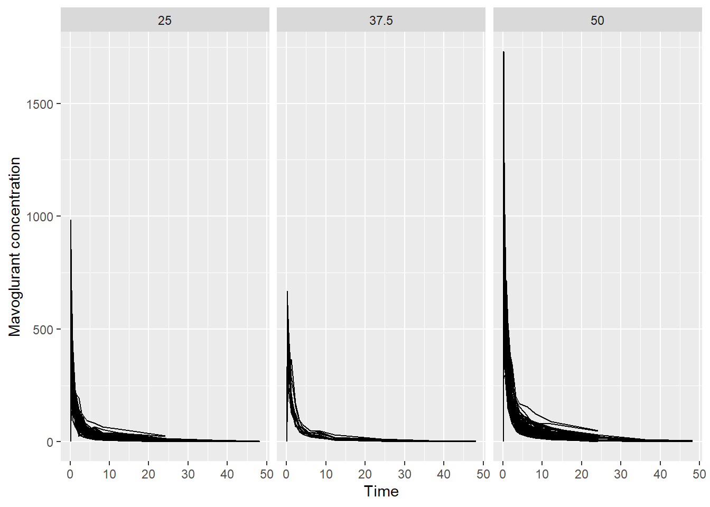
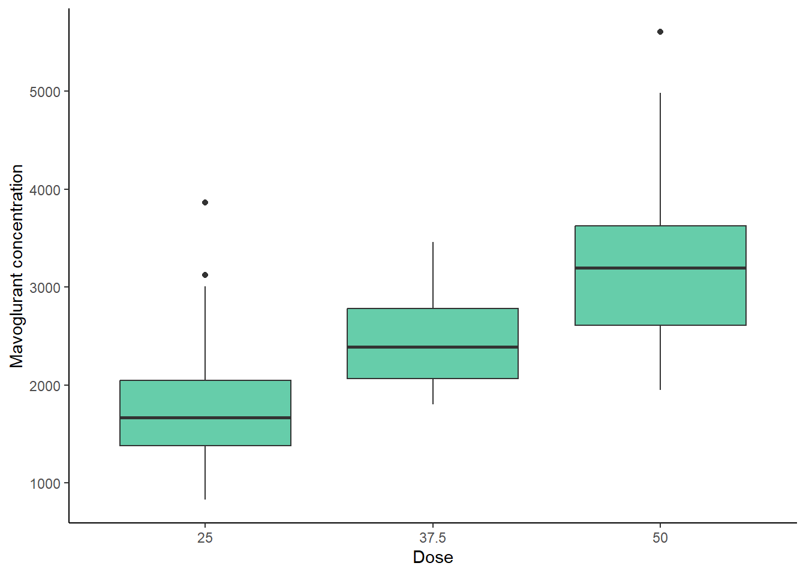
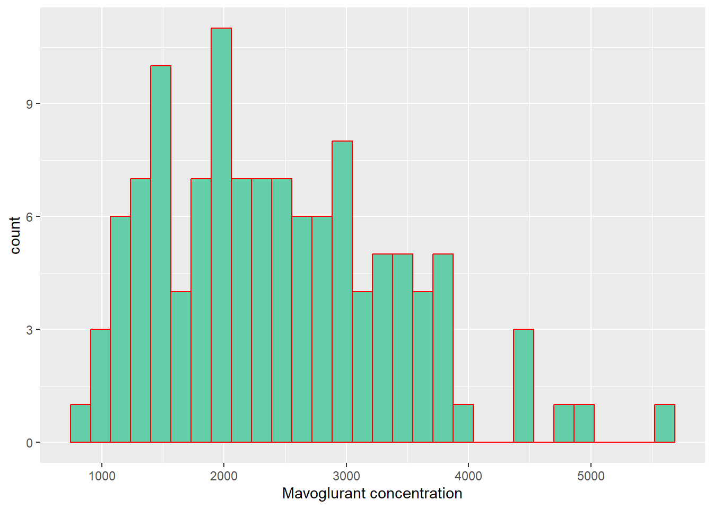
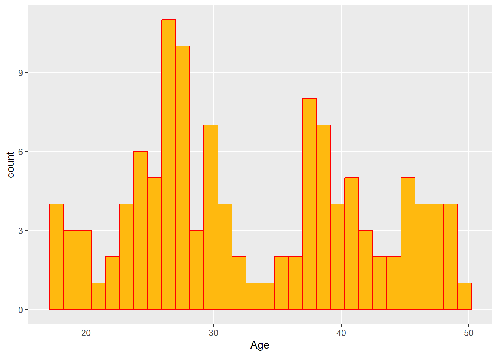
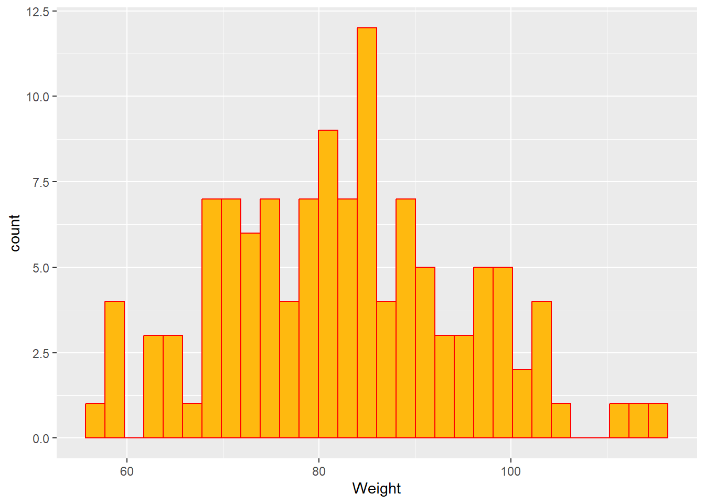
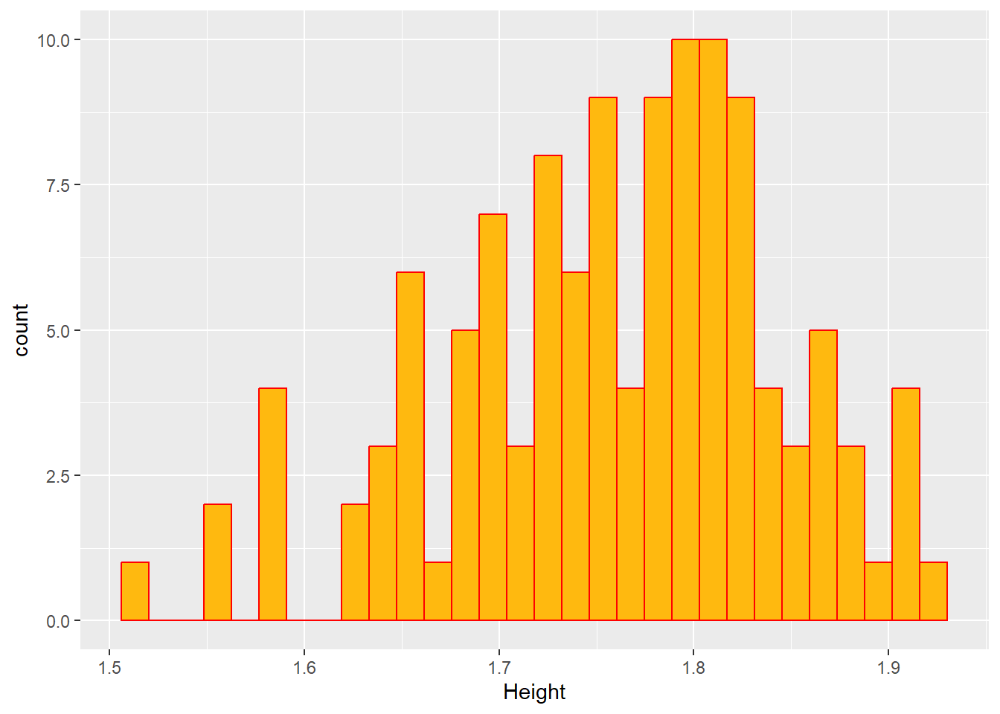
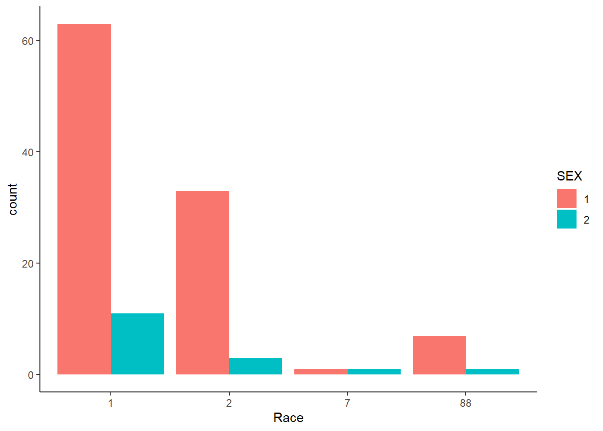

── Conflicts ────────────────────────────────────────── tidyverse_conflicts() ──
✖ dplyr::filter() masks stats::filter()
✖ dplyr::lag() masks stats::lag()
ℹ Use the conflicted package (<http://conflicted.r-lib.org/>) to force all conflicts to become errors
Rows: 2678 Columns: 17
── Column specification ────────────────────────────────────────────────────────
Delimiter: ","
dbl (17): ID, CMT, EVID, EVI2, MDV, DV, LNDV, AMT, TIME, DOSE, OCC, RATE, AG...
ℹ Use `spec()` to retrieve the full column specification for this data.
ℹ Specify the column types or set `show_col_types = FALSE` to quiet this message.
Data Cleaning
First, I created a plot showing the concentration of Mavoglurant DV over TIME, by DOSE. In the first attempt, the dose was plotted as a numeric variable so I mutated DOSE to be a categorical variable.
#Make `DOSE` a categorical variable using as.factor().mavoglurant <- mavoglurant %>%mutate(DOSE =as.factor(DOSE))#Create the plot of concentration by time, categorized by dose using ggplot().ggplot(mavoglurant, aes(x = TIME, y = DV, group= ID)) +geom_line() +#Do a line plotfacet_wrap(~ DOSE) +#Group by DOSElabs(x ="Time", y ="Mavoglurant concentration", color ="Dose")

Now, keeping just one of the observations for individuals that have two OCC observations.
mavoglurant <- mavoglurant %>%filter(OCC ==1)
Now, removing observations where TIME is equal to 0 and create a new dataframe mavoglurant_sum where it summarizes the concentrations from DV by each subject. Then, I created the mavoglurant_zero dataframe that contains only the observations where TIME is equal to 0. An finally I joined both new dataframes into the mavoglurant_new df.
# Exclude observations where 'TIME' = 0 and then compute the sum of 'DV' for each subject or 'ID', to create the `mavoglurant_sum` dataframe.mavoglurant_sum <- mavoglurant %>%filter(TIME !=0) %>%#Remove observations where time= 0group_by(ID) %>%#Group by subjectsummarize(Y =sum(DV)) #The sum variable is called `Y`#Create a dataframe with observations where TIME= 0.mavoglurant_zero <- mavoglurant %>%filter(TIME ==0) %>%group_by(ID)#Join the previous dataframes using left_join()mavoglurant_new <-inner_join(mavoglurant_sum, mavoglurant_zero, by ="ID")
Finally, I filtered out unnecessary variables for this exercise and RACE, and SEX were converted to factor type variables.
#Mutate SEX and RACE to factory type variables and then only keep Y, DOSE, AGE, SEX, RACE, WT and HT.mavoglurant_new <- mavoglurant_new %>%mutate(RACE =as.factor(RACE), SEX =as.factor(SEX)) %>%select(c(Y, DOSE, AGE, SEX, RACE, WT, HT))#Check the structure of the new dataframestr(mavoglurant_new)
The following plots and tables summarize the data observed from the mavoglurant_new dataframe.
First, a Boxplot that shows the dependent variable (Y) across the three different doses.
#Using ggplot() to create a boxplot of the predicted variable Y and the DOSEggplot(mavoglurant_new, aes(x= DOSE, y= Y))+geom_boxplot(fill="aquamarine3")+theme_classic()+labs(x="Dose", y="Mavoglurant concentration")

Based on the previous plot, it can be observed that at higher dose, the concentration of mavoglurant (predicted variable) increases. It is also seen that the range of concentrations is higher at the higher dose (50).
Now some plots that show the distribution of the dependent variable (Y) and the numeric independent variables AGE, WT and HT.
#Histogram of the dependent variable (Y)ggplot(mavoglurant_new, aes(x= Y))+geom_histogram(fill="aquamarine3", color="red")+labs(x="Mavoglurant concentration")
`stat_bin()` using `bins = 30`. Pick better value with `binwidth`.

#Histogram of AGEggplot(mavoglurant_new, aes(x= AGE))+geom_histogram(fill="darkgoldenrod1", color="red")+labs(x="Age")
`stat_bin()` using `bins = 30`. Pick better value with `binwidth`.

#Histogram of WTggplot(mavoglurant_new, aes(x= WT))+geom_histogram(fill="darkgoldenrod1", color="red")+labs(x="Weight")
`stat_bin()` using `bins = 30`. Pick better value with `binwidth`.

#Histogram of HTggplot(mavoglurant_new, aes(x= HT))+geom_histogram(fill="darkgoldenrod1", color="red")+labs(x="Height")
`stat_bin()` using `bins = 30`. Pick better value with `binwidth`.

In the previous plots in can be seen that the dependent (Y) variable and the Weight, follow a normal distribution. Height is observed that is skewed to the right, so this variable could not be following a normal distribution. On the other hand, it is observed that Age follows a bi-modal distribution. This is providing an insight about maybe first applying a regression model to this dataset.
The following table summarizes the previous variables, categorized by SEX (1 or 2). Here, it is shown the mean (sd), median (IQR) and the range.
#Creating a summary table using the tbl_summary() function from `gtsummary`sumtable <- mavoglurant_new %>%select(Y, AGE, HT, WT, SEX) %>%tbl_summary(by= SEX, type =all_continuous() ~"continuous2",statistic =all_continuous() ~c("{mean} ({sd})", "{median} ({p25}, {p75})", "{min}, {max}")) %>%bold_labels()#Visualize the tablesumtable
Characteristic
1, N = 104
2, N = 16
Y
Mean (SD)
2,478 (959)
2,236 (983)
Median (IQR)
2,398 (1,727, 3,072)
2,060 (1,491, 2,698)
Range
826, 5,607
1,044, 4,835
AGE
Mean (SD)
32 (9)
41 (7)
Median (IQR)
30 (25, 39)
42 (38, 45)
Range
18, 49
28, 50
HT
Mean (SD)
1.78 (0.07)
1.63 (0.06)
Median (IQR)
1.78 (1.73, 1.82)
1.63 (1.58, 1.66)
Range
1.59, 1.93
1.52, 1.75
WT
Mean (SD)
84 (12)
73 (11)
Median (IQR)
83 (75, 92)
70 (64, 81)
Range
57, 115
58, 90
And here, showing barplots for the categorical variables SEX and RACE.
#Creating a bar plot that shows the counts for each race category by sex.ggplot(mavoglurant_new, aes(x= RACE, fill= SEX))+geom_bar(position ="dodge")+theme_classic()+labs(x="Race")

It is observed on the previous plot that there are more subjects of sex 1, than 2 for the 1, 2 and 88 race categories. Meanwhile for the race category 7, it seems that there is the same amount of subjects by sex category. It is a shame that the correct labels for these categories are not known for sure.
And finally, exploring correlations between all the variables, visualizing by a plot:
#Creating a correlation plot using the ggpairs() function from the GGally package.ggpairs(mavoglurant_new, columns =c(1, 3, 6, 7), progress = F)
Based on this plot it is observed that the highest correlation is between the variables Height and Weight (0.6), and the linear plots in the middle confirm the distribution of each one of the variables.
Model Fitting
Linear Regression Models
First, I fitted a linear model using the continuous outcome (Y) and DOSE as the predictor.
# Define the model specification for linear regressionlinear_model <-linear_reg() %>%set_engine("lm") %>%#Specify the linear model to fit the modelset_mode("regression") #Setting the mode as a regression model# Define the formulaformula1 <- Y ~ DOSE# Fit the modellm_simple <- linear_model %>%fit(formula1, data = mavoglurant_new) #Calling the formula and the dataframe to compute the linear model# Output the model summarysummary(lm_simple$fit)
Call:
stats::lm(formula = Y ~ DOSE, data = data)
Residuals:
Min 1Q Median 3Q Max
-1290.1 -445.6 -90.9 352.2 2367.7
Coefficients:
Estimate Std. Error t value Pr(>|t|)
(Intercept) 1782.67 87.85 20.292 < 2e-16 ***
DOSE37.5 681.24 213.69 3.188 0.00184 **
DOSE50 1456.20 130.43 11.165 < 2e-16 ***
---
Signif. codes: 0 '***' 0.001 '**' 0.01 '*' 0.05 '.' 0.1 ' ' 1
Residual standard error: 674.8 on 117 degrees of freedom
Multiple R-squared: 0.5159, Adjusted R-squared: 0.5076
F-statistic: 62.33 on 2 and 117 DF, p-value: < 2.2e-16
Based on the model it can be inferred that the outcome increases by around 681.24 units with the dose 37.5 and increases by 1456.20 with the dose 50, all compared with the dose 25. It is also observed that the differences are statistically significant, given the p-values are less than 0.001.
Now, fitting a linear model using the continuous outcome (Y) and using the rest of the variables as predictors.
#The model specification has already been set in the previous code chunk, so there is no need to set it again.# Define the formulaformula2 <- Y ~ AGE + WT + HT + DOSE + SEX + RACE# Fit the modellm_multi <- linear_model %>%fit(formula2, data = mavoglurant_new)# Output the model summarysummary(lm_multi$fit)
Call:
stats::lm(formula = Y ~ AGE + WT + HT + DOSE + SEX + RACE, data = data)
Residuals:
Min 1Q Median 3Q Max
-1496.97 -362.81 -71.26 285.84 2421.48
Coefficients:
Estimate Std. Error t value Pr(>|t|)
(Intercept) 4890.923 1822.710 2.683 0.008415 **
AGE 3.521 7.895 0.446 0.656517
WT -23.281 6.440 -3.615 0.000454 ***
HT -741.050 1108.100 -0.669 0.505051
DOSE37.5 663.683 200.448 3.311 0.001258 **
DOSE50 1499.048 122.462 12.241 < 2e-16 ***
SEX2 -360.048 217.775 -1.653 0.101121
RACE2 148.883 129.821 1.147 0.253936
RACE7 -420.950 451.163 -0.933 0.352846
RACE88 -65.300 246.961 -0.264 0.791954
---
Signif. codes: 0 '***' 0.001 '**' 0.01 '*' 0.05 '.' 0.1 ' ' 1
Residual standard error: 616.6 on 110 degrees of freedom
Multiple R-squared: 0.62, Adjusted R-squared: 0.5889
F-statistic: 19.94 on 9 and 110 DF, p-value: < 2.2e-16
For the interpretation of this model I will focus only on the statistically significant predictors (p-value < 0.001). Besides dose 37.5 with an increase of the outcome by a factor of ~664 and dose 50 with an increase by a factor of ~1500, Weight is also another variable associated with a decrease of the outcome by a factor of ~23.
In summary, it can be observed that the coefficients slightly changed between both models, however the second model seems a better fit. To evaluate which model is best, I computed the root mean square error (RMSE) and R-squared as metrics. First for the linear model using one predictor, and then using multiple predictors.
#ONE VARIABLE AS PREDICTOR#Create a prediction from the dataframelmsimple_pred <-predict(lm_simple, new_data = mavoglurant_new %>%select(-Y))#Match predicted with observedlmsimple_pred <-bind_cols(lmsimple_pred, mavoglurant_new %>%select(Y))#Estimate the metricslmsimple_metrics <-metric_set(rmse, rsq)lmsimple_metrics(lmsimple_pred, truth = Y, estimate = .pred)
# A tibble: 2 × 3
.metric .estimator .estimate
<chr> <chr> <dbl>
1 rmse standard 666.
2 rsq standard 0.516
#MULTIPLE VARIABLES AS PREDICTORS#Create a prediction from the dataframelmmulti_pred <-predict(lm_multi, new_data = mavoglurant_new %>%select(-Y))#Match predicted with observedlmmulti_pred <-bind_cols(lmmulti_pred, mavoglurant_new %>%select(Y))#Estimate the metricslmmulti_metrics <-metric_set(rmse, rsq)lmmulti_metrics(lmmulti_pred, truth = Y, estimate = .pred)
# A tibble: 2 × 3
.metric .estimator .estimate
<chr> <chr> <dbl>
1 rmse standard 590.
2 rsq standard 0.620
We can observe that the RMSE is lower (590.3) in the model that inputs all the variables as predictors compared to the linear model that uses Dose as a predictor (RMSE= 666.3). We also observe that the R2 is slightly higher in the second model (0.62) compared to the first model (0.52). In this case we can conclude that the second model (linear model with multiple predictors) is a better fit to this dataset.
Logistic Models
Now, I fitted a logistic model to the outcome SEX, and using DOSE as a predictor. I also evaluated the Accuracy and ROC-AUC of this model in the following steps.
# Define the model specificationlogistic_spec <-logistic_reg() %>%#Defining as logisticset_engine("glm") %>%#...From the GLM familyset_mode("classification") #Classification, since it involves categorical variables# Create the reciperecipe <-recipe(SEX ~ DOSE, data = mavoglurant_new) %>%step_dummy(all_nominal(), -all_outcomes())# Split the data into training and testing setsset.seed(123) #For reproducibilitydata_split <-initial_split(mavoglurant_new, prop =0.75)train_data <-training(data_split) #Create a training data to apply the modeltest_data <-testing(data_split) #Create a test data to apply the model evaluation# Fit the modellogistic_fit <-workflow() %>%add_recipe(recipe) %>%add_model(logistic_spec) %>%fit(data = train_data)# Make predictions on the test set to determine the ROC-AUC of the modelpredictions <-predict(logistic_fit, test_data, type ="prob")#Make predictions on the test set to determine the Accuracy of the modelpredictions2 <- logistic_fit %>%predict(new_data = test_data)# Bind the predictions to the testing setresults <-bind_cols(test_data, predictions) #ROC-AUCresults2 <-bind_cols(test_data, predictions2) #Accuracy# Calculate ROC-AUCroc_auc <-roc_auc(results, truth = SEX, .pred_1)# Calculate Accuracyaccuracy <-accuracy(results2, truth = SEX, estimate = .pred_class)# Output the model and the metricslog1 <-glm(formula = SEX ~ DOSE, family =binomial(link ="logit"), data = train_data)summary(log1)
Call:
glm(formula = SEX ~ DOSE, family = binomial(link = "logit"),
data = train_data)
Coefficients:
Estimate Std. Error z value Pr(>|z|)
(Intercept) -1.3581 0.3737 -3.634 0.000279 ***
DOSE37.5 0.2595 0.8980 0.289 0.772583
DOSE50 -1.0986 0.7082 -1.551 0.120851
---
Signif. codes: 0 '***' 0.001 '**' 0.01 '*' 0.05 '.' 0.1 ' ' 1
(Dispersion parameter for binomial family taken to be 1)
Null deviance: 77.801 on 89 degrees of freedom
Residual deviance: 74.572 on 87 degrees of freedom
AIC: 80.572
Number of Fisher Scoring iterations: 5
And finally, fitting a logistic model to the outcome SEX, using all of the variables as predictors. I also computed the ROC-AUC and Accuracy of this model.
# The model has been defined before 'logistic_spec', so there is no need to define it again.# Create the recipe of this modelrecipe2 <-recipe(SEX ~ Y + AGE + WT + HT + DOSE + RACE, data = mavoglurant_new) %>%step_dummy(all_nominal(), -all_outcomes()) %>%step_zv(all_predictors()) %>%step_normalize(all_predictors())# Split the data into training and testing setsset.seed(123) #For reproducibilitydata_split2 <-initial_split(mavoglurant_new, prop =0.75)train_data2 <-training(data_split2) #Create a training data to apply the modeltest_data2 <-testing(data_split2) #Create a test data to apply the model evaluation# Fit the modellogistic_fit2 <-workflow() %>%add_recipe(recipe2) %>%add_model(logistic_spec) %>%fit(data = train_data)
Warning: glm.fit: fitted probabilities numerically 0 or 1 occurred
# Make predictions on the test set to determine the ROC-AUC of the modelpredictions_auc <-predict(logistic_fit2, test_data2, type ="prob")#Make predictions on the test set to determine the Accuracy of the modelpredictions_acc <- logistic_fit %>%predict(new_data = test_data2)# Bind the predictions to the testing setresults_auc2 <-bind_cols(test_data2, predictions_auc) #ROC-AUCresults_acc2 <-bind_cols(test_data2, predictions_acc) #Accuracy# Calculate ROC-AUCroc_auc2 <-roc_auc(results_auc2, truth = SEX, .pred_1)# Calculate Accuracyaccuracy2 <-accuracy(results_acc2, truth = SEX, estimate = .pred_class)# Output the metrics using list()log2 <-glm(formula = SEX ~ Y + AGE + WT + HT + DOSE + RACE, family =binomial(link ="logit"), data = train_data2)
Warning: glm.fit: fitted probabilities numerically 0 or 1 occurred
summary(log2)
Call:
glm(formula = SEX ~ Y + AGE + WT + HT + DOSE + RACE, family = binomial(link = "logit"),
data = train_data2)
Coefficients:
Estimate Std. Error z value Pr(>|z|)
(Intercept) 119.467600 47.800737 2.499 0.0124 *
Y -0.002105 0.002031 -1.036 0.3000
AGE 0.319506 0.174943 1.826 0.0678 .
WT -0.190608 0.130000 -1.466 0.1426
HT -64.948813 26.352756 -2.465 0.0137 *
DOSE37.5 -7.347424 8.122569 -0.905 0.3657
DOSE50 -3.665713 5.095677 -0.719 0.4719
RACE2 -6.722388 4.881126 -1.377 0.1684
RACE7 -3.259653 17.820091 -0.183 0.8549
RACE88 -5.593682 12.167640 -0.460 0.6457
---
Signif. codes: 0 '***' 0.001 '**' 0.01 '*' 0.05 '.' 0.1 ' ' 1
(Dispersion parameter for binomial family taken to be 1)
Null deviance: 77.801 on 89 degrees of freedom
Residual deviance: 12.013 on 80 degrees of freedom
AIC: 32.013
Number of Fisher Scoring iterations: 10
Based on the previous logistic models, it is observed that appears there is no association between the dose of mavoglurant and sex. However, when observing the second logistic model, it appears there is a statistically significant association between height and sex (p-value < 0.05). While looking at the accuracy from both models, we can see that both have the same accuracy (93%), however, the ROC-AUC value is pretty low for the model that uses only Dose as a predictor (0.39), meanwhile, the model that uses dose and all the other variables as predictors has a better value (0.96), which reflects better sensitivity and specificity.
Remove the RACE variable from the mavoglurant_new dataframe.
#Select all other variables, except `RACE`mavoglurant_new <- mavoglurant_new %>%select(-RACE)
Split the data randomly to a 75% train and 25% test data.
#Let the data split be 75-25% or 3/4data_split3 <-initial_split(mavoglurant_new, prop =0.75)#Create the train and test data framestrain_data3 <-training(data_split3)test_data3 <-testing(data_split3)
Model performance assessment 1
Now, fitting a linear regression model that predicts the outcome Y based on DOSE alone. Then, making predictions to compare against the observed values and then computing the RMSE to evaluate.
#Define the model specification for linear regressionlm_dose <-linear_reg() %>%set_engine("lm") %>%#Specify the linear model to fit the modelset_mode("regression") %>%#Setting the mode as a regression modelfit(Y ~ DOSE, data = train_data3)#Tidy the resultstidy(lm_dose)
#Create a prediction from the dataframe for the `DOSE` modellmdose_pred <-predict(lm_dose, new_data = train_data3)#Match predicted with observed valueslmdose_pred <-bind_cols(lmdose_pred, train_data3)#Estimate the metrics for the `DOSE` modellmdose_metric <-metric_set(rmse) #Set the function to estimate RMSElmdose_metric(lmdose_pred, truth = Y, estimate = .pred) #Compute the RMSE
# A tibble: 1 × 3
.metric .estimator .estimate
<chr> <chr> <dbl>
1 rmse standard 703.
Computing another linear regression model that predicts Y using the other variables as predictors. I also computed the predicted vs observed values to compute the RMSE of this model.
#Define the model specification for linear regressionlm_all <-linear_reg() %>%set_engine("lm") %>%#Specify the linear model to fit the modelset_mode("regression") %>%#Setting the mode as a regression modelfit(Y ~ ., data = train_data3)#Tidy the resultstidy(lm_all)
#Create a prediction from the dataframe of the model with all the other predictorslmall_pred <-predict(lm_all, new_data = train_data3)#Match predicted with observedlmall_pred <-bind_cols(lmall_pred, train_data3)#Estimate the metrics for the model with all the variables as predictorslmall_metric <-metric_set(rmse) #Set the functionlmall_metric(lmall_pred, truth = Y, estimate = .pred) #Compute the RMSE
# A tibble: 1 × 3
.metric .estimator .estimate
<chr> <chr> <dbl>
1 rmse standard 627.
Now I created a null model and computed the RMSE.
#Run the null modellm_null <-null_model(mode ="regression") %>%set_engine("parsnip") %>%fit(Y ~1, data = train_data3)#Compute the RMSE and other estimatesnull_metric <- lm_null %>%predict(train_data3) %>%bind_cols(train_data3) %>%metrics(truth = Y, estimate = .pred)
Warning: A correlation computation is required, but `estimate` is constant and has 0
standard deviation, resulting in a divide by 0 error. `NA` will be returned.
#Print the RMSE (Note: This includes also the R-squared and MAE but I am only interested in the RMSE)null_metric
# A tibble: 3 × 3
.metric .estimator .estimate
<chr> <chr> <dbl>
1 rmse standard 948.
2 rsq standard NA
3 mae standard 765.
In summary, according to the RMSE parameters, the model that includes all the variables as predictors performed better (RMSE= 627), compared to the model using only DOSE as a predictor (RMSE= 702) and the null model (RMSE= 948) as a reference.
Model performance assessment 2
Now, evaluating both models using a 10-fold cross-validation. First, by the model that predicts Y only using DOSE.
#Set the seed for reproducibilityset.seed(rngseed)#Set the cross-validation folds as 10folds <-vfold_cv(train_data3, v=10)#Set the model specification, for linear regressionlinear_mod <-linear_reg() %>%set_engine("lm")#Set the workflowlinear_wf <-workflow() %>%add_model(linear_mod) %>%add_formula(Y ~ DOSE)#Do the resamplesdose_resample <-fit_resamples(linear_wf, resamples = folds)#Extract the metriccollect_metrics(dose_resample)
# A tibble: 2 × 6
.metric .estimator mean n std_err .config
<chr> <chr> <dbl> <int> <dbl> <chr>
1 rmse standard 697. 10 68.1 Preprocessor1_Model1
2 rsq standard 0.500 10 0.0605 Preprocessor1_Model1
Now, doing the cross-validation for the model that predicts Y using all the other variables as predictors.
#Set the seed for reproducibilityset.seed(rngseed)#Set the workflowlinear_all_wf <-workflow() %>%add_model(linear_mod) %>%add_formula(Y ~ .)#Do the resamplesall_resample <-fit_resamples(linear_all_wf, resamples = folds)#Extract the metriccollect_metrics(all_resample)
# A tibble: 2 × 6
.metric .estimator mean n std_err .config
<chr> <chr> <dbl> <int> <dbl> <chr>
1 rmse standard 653. 10 63.6 Preprocessor1_Model1
2 rsq standard 0.561 10 0.0717 Preprocessor1_Model1
Based on the previous results, it can be observed that when fitting the model and conducting a 10-fold cross-validation the RMSEs changed but still, the model that uses all predictors have a better metric (RMSE= 653, SE= 63.6) than the model that uses only DOSE as a predictor (RMSE= 696, SE= 68).
And now, computing the same CV analysis, but setting a different seed.
#Set the seed for reproducibilityset.seed(2302)#Set the cross-validation folds as 10folds2 <-vfold_cv(train_data3, v=10)#Set the model specification, for linear regressionlinear_mod2 <-linear_reg() %>%set_engine("lm")#ONE PREDICTOR LINEAR MODEL#Set the workflowlinear_wf2 <-workflow() %>%add_model(linear_mod2) %>%add_formula(Y ~ DOSE)#Do the resamplesdose_resample2 <-fit_resamples(linear_wf2, resamples = folds2)#Extract the metriccollect_metrics(dose_resample2)
# A tibble: 2 × 6
.metric .estimator mean n std_err .config
<chr> <chr> <dbl> <int> <dbl> <chr>
1 rmse standard 706. 10 53.3 Preprocessor1_Model1
2 rsq standard 0.451 10 0.0690 Preprocessor1_Model1
#ALL PREDICTORS LINEAR MODEL#Set the workflowlinear_all_wf2 <-workflow() %>%add_model(linear_mod2) %>%add_formula(Y ~ .)#Do the resamplesall_resample2 <-fit_resamples(linear_all_wf2, resamples = folds2)#Extract the metriccollect_metrics(all_resample2)
# A tibble: 2 × 6
.metric .estimator mean n std_err .config
<chr> <chr> <dbl> <int> <dbl> <chr>
1 rmse standard 660. 10 57.5 Preprocessor1_Model1
2 rsq standard 0.516 10 0.0613 Preprocessor1_Model1
In this case, when changing the seed, the metrics changed for both models but they are similar in proportion. For the linear model with a single predictor the RMSE= 705.9 and for the model with all predictors the RMSE= 660. However, the standar error is higher for the model with all the predictors (SE= 57.51), compared to the model with a single predictor (SE= 53.33). Still, it seems that the linear model that uses all the predictors is better than the model that uses only DOSE as a single predictor.